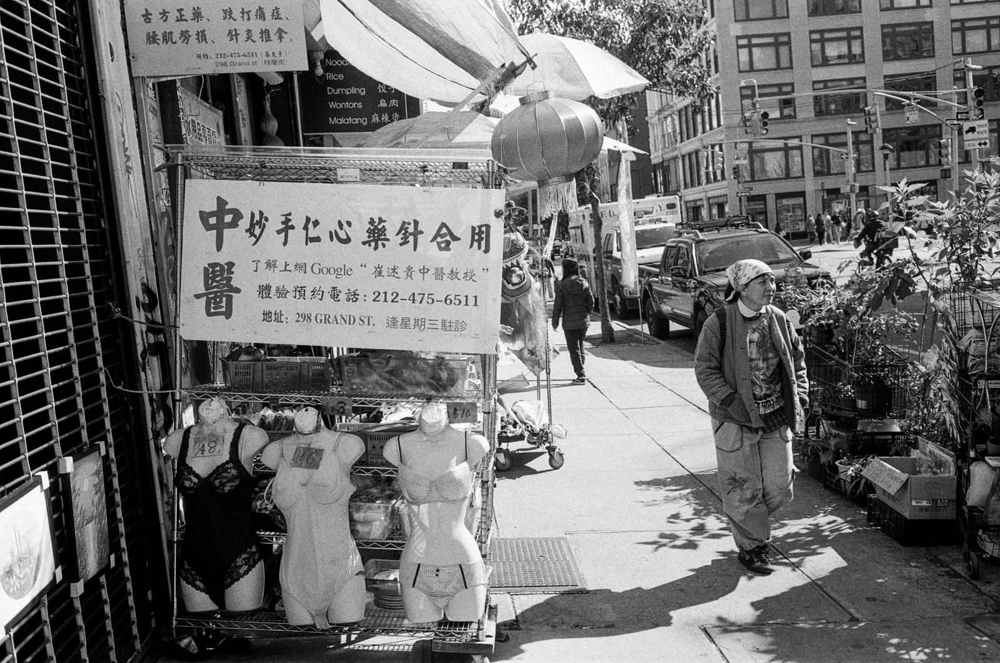
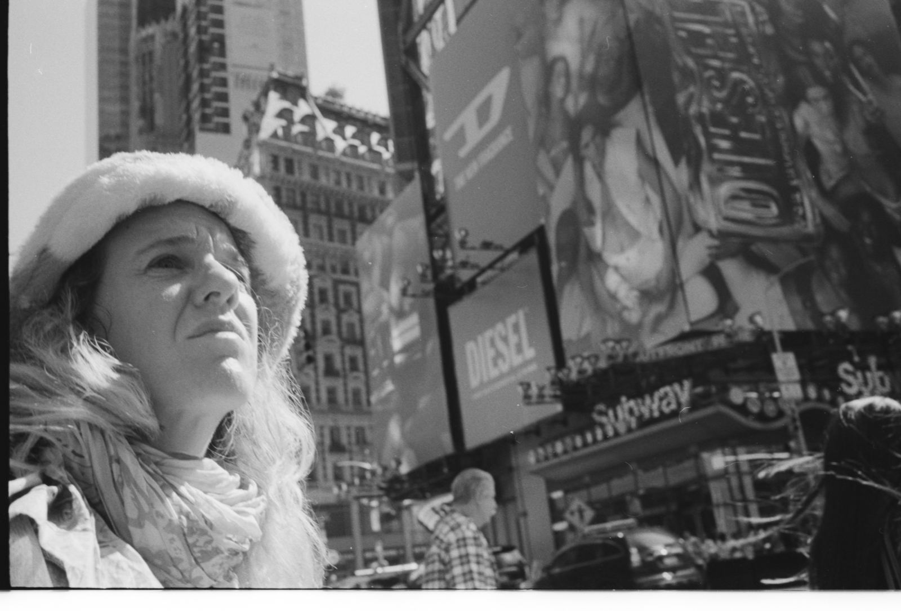
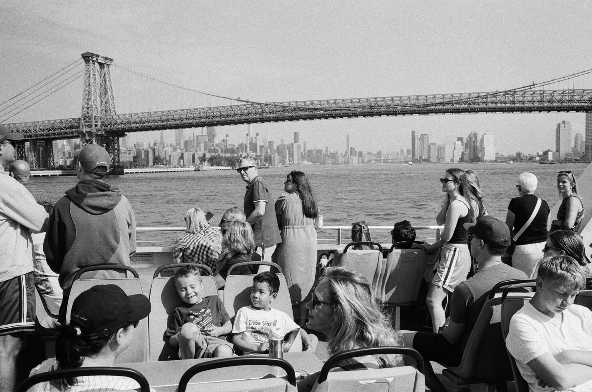
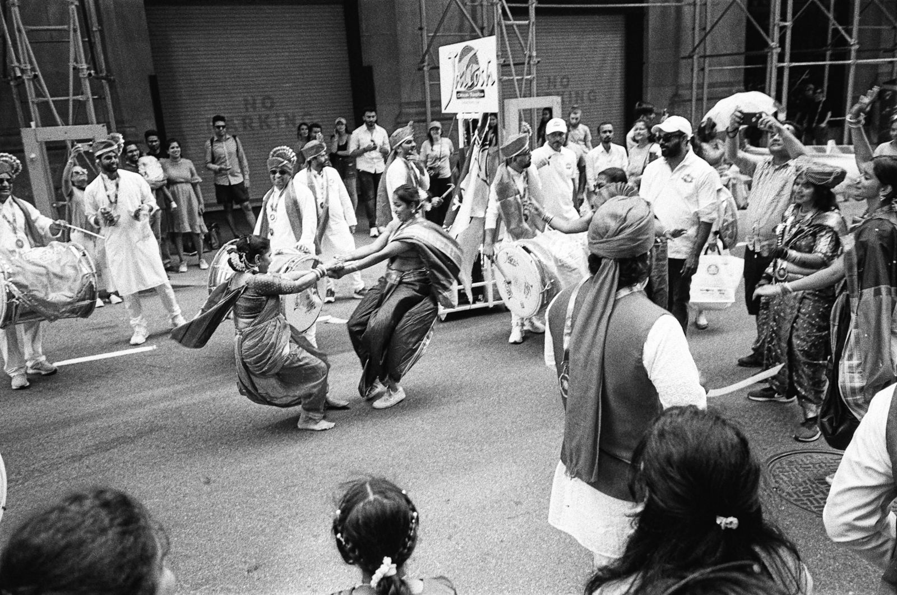
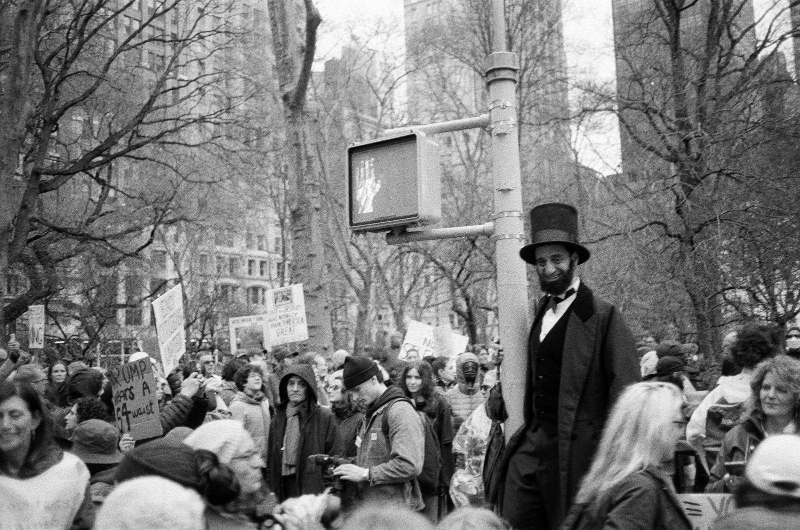
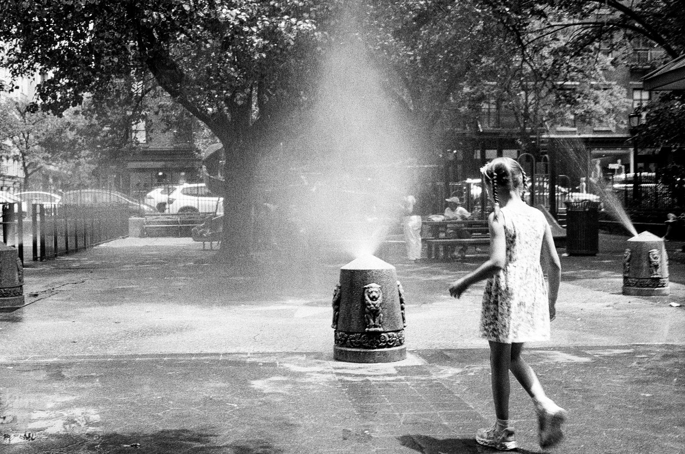
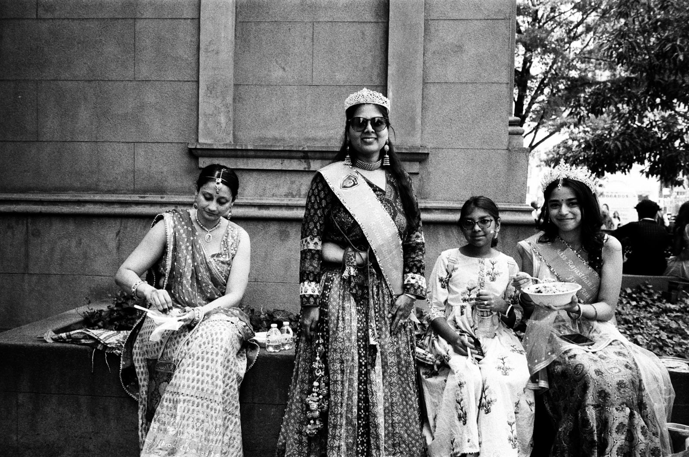
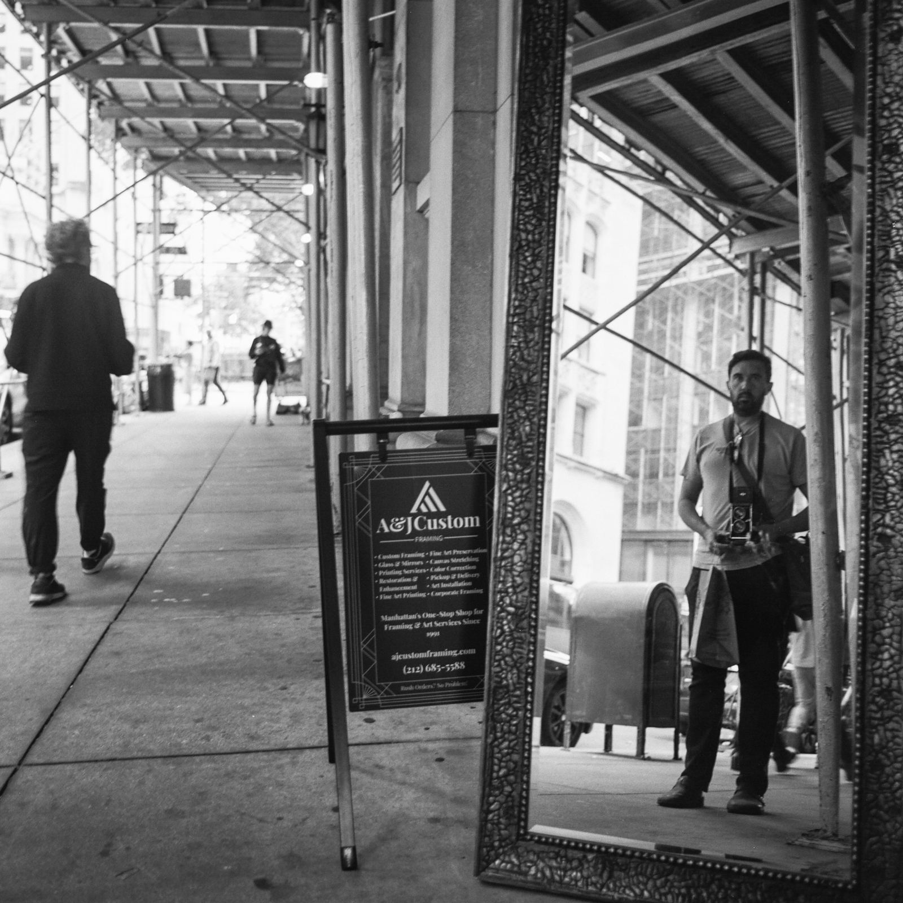

Street Photography Walking Tours · New York City
Small-group walking tours through New York's most photogenic neighborhoods — part photography workshop, part city history, all on foot. Bring any camera. Leave with better pictures.
Book a TourLed by a NYC-licensed sightseeing guide & working photographer
The Tours
Every tour mixes neighborhood history with hands-on street photography instruction. We stop, we look, we talk about light and timing and composition — and then you shoot. I work with you individually along the way, whatever your camera and whatever your level. Tours can be combined for full-day experiences, remixed to focus on particular neighborhoods, or reimagined altogether. Just ask!

We'll travel through SoHo, Chinatown, and the Lower East Side, exploring some of the most fashionable, bustling, and fun parts of the city — bursting with history and people looking to be seen. My favorite tour and the one I recommend the most.
Book this tour →
From Bryant Park up to Central Park, we'll see (depending on the day of the week) the 9-to-5ers hustling to and from work, classic New Yorkers going shopping, and the beautiful urban oasis of Central Park.
Book this tour →
Explore the Polish enclave of Greenpoint, the hipster enclave of Williamsburg, and a stunning stretch of waterfront — with Manhattan views — stretching for miles.
Book this tour →
If you're a New Yorker, you know Queens has the best food in the city — possibly the world. On this tour, you'll get to try as much of it as you can handle, while making pictures in some of the most diverse neighborhoods the city has to offer. This tour is for the adventurous: you won't see very many tourists, if any, and we'll have the best food stalls, trucks, and restaurants all to ourselves.
Book this tour →What Guests Say
"[Guest quote goes here — ask your first guests for a sentence or two about the tour.]"
— Name, City
"[Guest quote goes here.]"
— Name, City
"[Guest quote goes here.]"
— Name, City



What You'll Learn
This is the heart of the tour. History gives us the why of each neighborhood; the instruction gives you the how of photographing it.
How to read a street — light, background, flow of people — and position yourself before the picture happens instead of chasing it.
Layering, framing, and timing for candid work. Why some frames feel alive and others feel like snapshots.
Manhattan's canyons create extraordinary light. Learn to find it, meter for it, and build a picture around it.
Photographing strangers legally, ethically, and comfortably — the practical craft nobody teaches you from a book.
Phone, digital, or film — the principles are the same. If you shoot film, so do I; happy to talk zone focusing, pushing stock, and darkroom.
The photographers who made these streets famous — and what you can steal from them, honestly.
About Your Guide

I'm a Brooklyn-based photographer and a New York City licensed sightseeing guide. I shoot the city the old way — black-and-white film, printed by hand in the darkroom — and I've spent years walking these streets with a camera.
I've taught and assisted photography courses at the International Center of Photography and I'm a member of the Bushwick Community Darkroom. My own work has been shown to editors, curators, and reviewers at national portfolio reviews, and I'm currently at work on a long-term documentary project.
Before photography took over, I spent years working in international development — which taught me two things that shape every tour: how to explain a place to someone seeing it for the first time, and how to pay attention to the people who actually live there.
These tours are what I'd want if I were visiting a city: real instruction from a working photographer, real history from a licensed guide, and a small enough group that you get both.
Details
$350 for a single person or a group of up to 3 people. Larger group tours are available — inquire for more info. Food, drinks, and subway fare are the responsibility of participants.
Any camera — including your phone. If you want to try shooting film, ask when you book; I can sometimes bring a loaner.
All levels. I adjust instruction to each person — beginners get fundamentals, experienced shooters get pushed on the harder stuff.
It depends on your pace, what we find that day, and how often we stop for snacks and drinks. Usually around 2.5 miles, never more than 5 — always at a photographer's pace, with lots of stops.
Light rain can make the best pictures — we go. In serious weather we reschedule at no charge.
All times of day — even nighttime. The best light tends to be morning and late afternoon, but I'm able to accommodate all kinds of schedules.
For those with mobility issues, or anyone needing pickup or drop-off from a hotel, airport, or elsewhere, a vehicle with driver is available upon request for an additional charge.
Yes — I hold a NYC Department of Consumer and Worker Protection sightseeing guide license. Legally required, frequently skipped. Not by me.
Book a Tour
Tours run year-round, any time of day or night — though mornings and late afternoons have the best light.
I reply to all inquiries within a day.